A year learning to design for people, not for screens.
The Master's gave me a structured framework for the UX process — from research and problem definition through to prototyping and validation. Two projects from the programme stand out as the most complete examples of that process in practice.
The internship at Singular Things was also part of this Master's — you can find that work in its own page.
Two full design processes, start to finish.
The brief was broad: how can cities and their inhabitants adapt to the effects of climate change? Research led us to food waste — 931 million tons of food wasted globally each year, with 60% of it being the direct responsibility of consumers. The redesigned challenge became: how do we educate households and help them reduce waste practically?
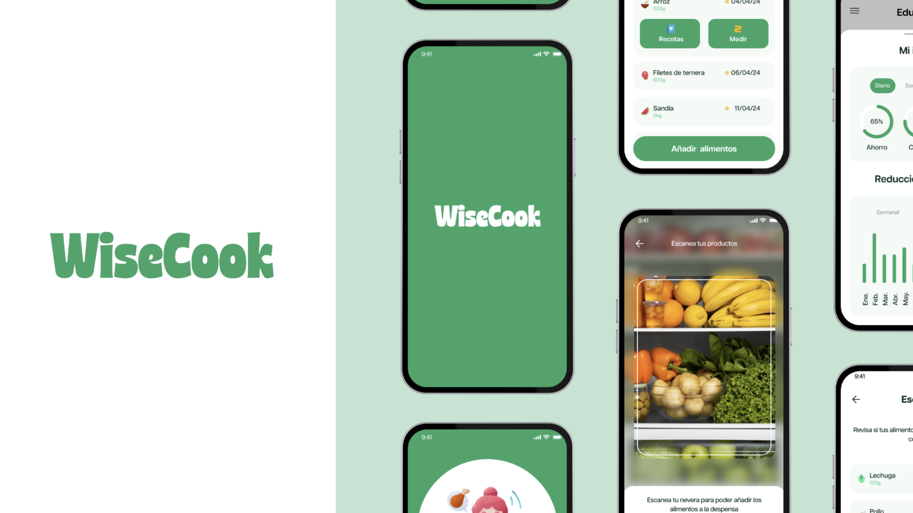
The research phase surfaced three concrete behavioural patterns: people forget what they have in their pantry, they don't know how to use ingredients before they expire, and they underestimate their individual impact on the problem.
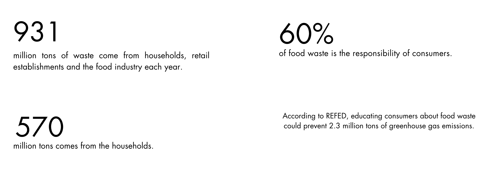
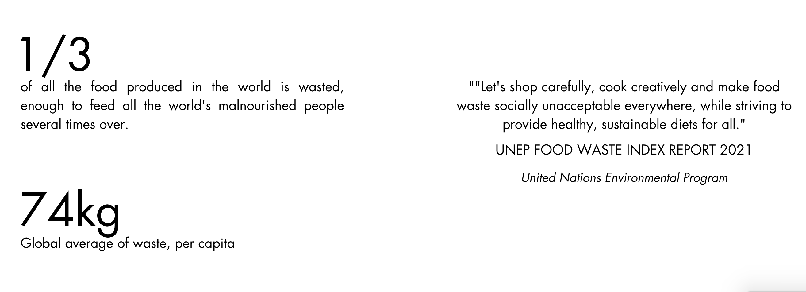
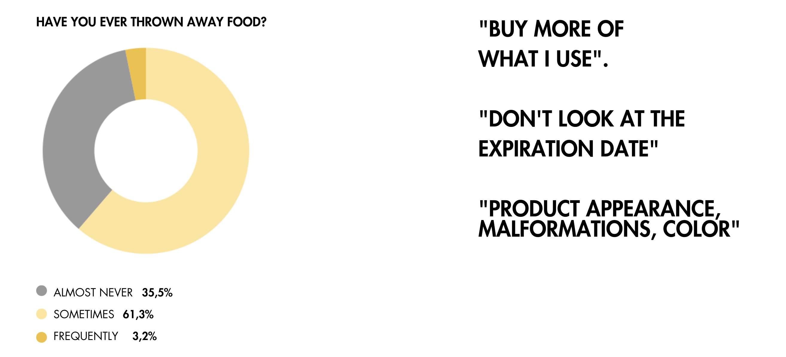
Research findings — food waste patterns and user behaviour.
The solution was WiseCook — an educational platform that helps users manage their pantry inventory, suggests recipes based on what they have, and uses Machine Learning to track ingredient shelf life. Complementing the app, the Wisemer is a smart fridge accessory that syncs with the pantry section and displays expiry information directly on the fridge door.
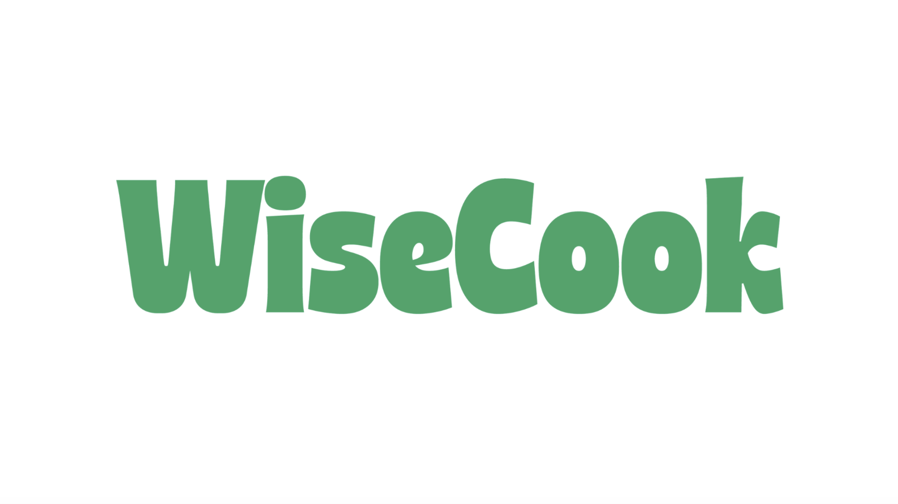
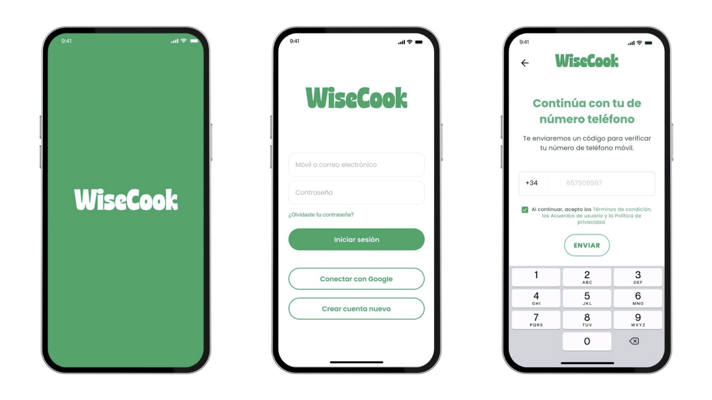
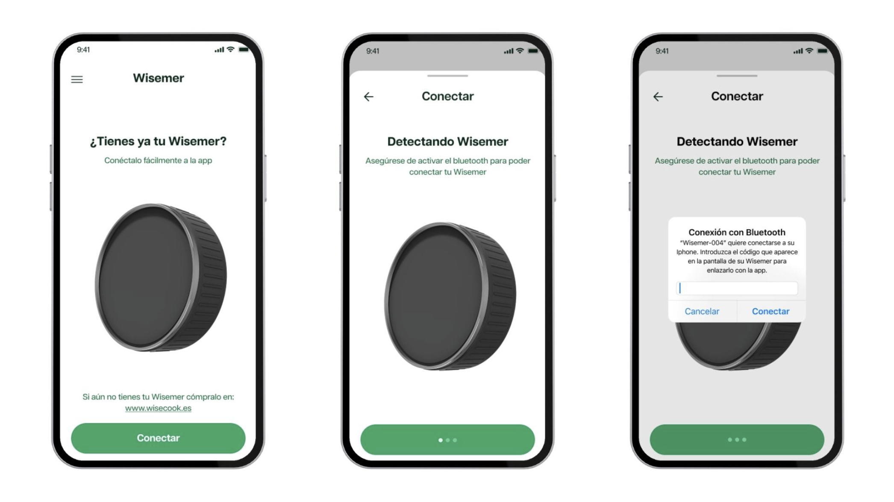
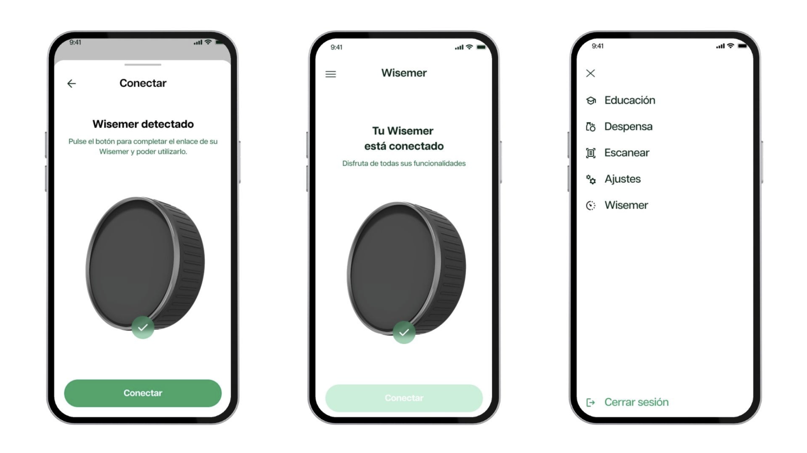
Wisemer — smart fridge accessory designed to complement the WiseCook app.
The subject was house moving. Interviews with people who had recently moved in Madrid surfaced a consistent pain: everyone ends up with stuff they can't take to the new place — furniture that doesn't fit, appliances that are already covered, things they've been meaning to get rid of for years. The move forces the decision, but there's no good option for dealing with it quickly.
After ideation using 6-3-5, mind mapping and brainstorming, the selected solution was Rematazo — an app where people moving can post their unwanted items as a garage sale, and buyers in the area can visit and purchase directly. Fast, local, and frictionless.
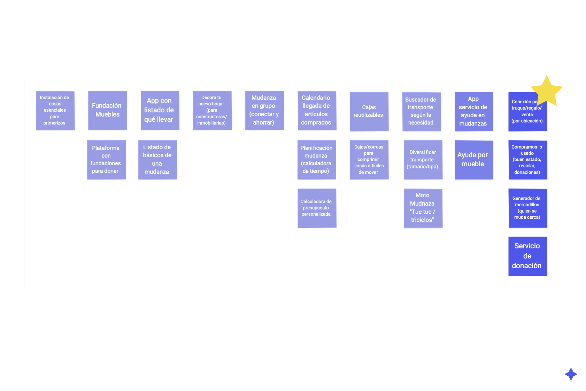
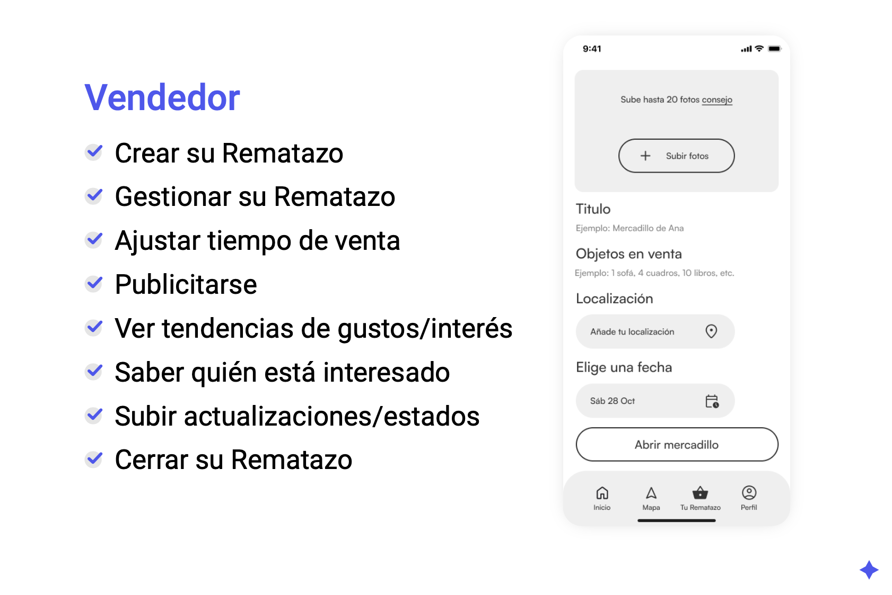
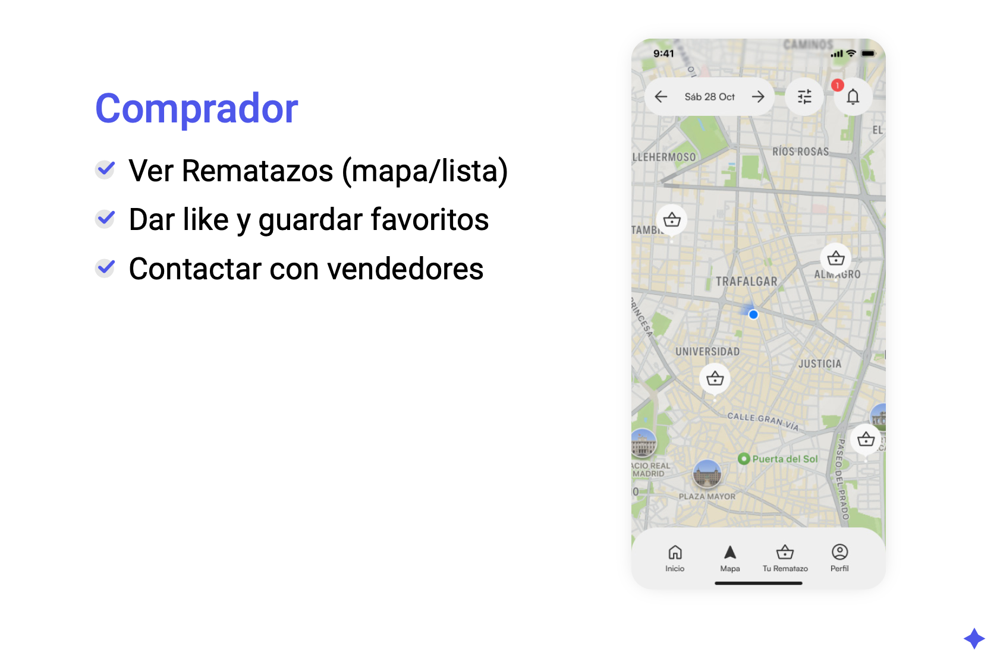
Rematazo — prototype mockups showing the posting and browsing flow.